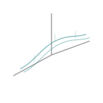
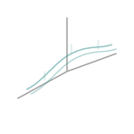

This post recounts my first research internship experience at the Design and Innovation Center (DIC) at Panjab University. The DIC is one of twenty such centers established by the Indian government to foster a culture of innovation. I first became aware of this opportunity through a senior at my IEEE Student Branch, which I was a member of at the time.

I worked on a project related to maintaining the efficiency of solar panels, particularly during the intense heat of summer. The problem is that after reaching a specific temperature, the efficiency of solar panels in producing energy begins to decrease. For instance, if a solar panel has a temperature coefficient of -0.38% per degree Celsius, its efficiency will drop by 0.38% for every degree above 25°C. Conversely, for every degree below 25°C, its efficiency increases by the same amount. This means that cooler, sunny weather is actually the optimal condition.
My project, therefore, involved developing a cooling mechanism so that solar panels could maintain an optimum temperature and produce energy more efficiently. During the internship, I devised and implemented a water-based cooling mechanism, established an Arduino microcontroller-based system to regulate the panel temperature using control algorithms, and successfully constructed a functional small-scale prototype to validate the effectiveness of the entire system.

Working on this project taught me a valuable lesson. I used to think that I needed to know everything before starting something new. However, I've learned that it's all about learning *while* working. You don't need to be an expert to begin; you can simply start and learn as you go. This is a principle I will carry with me for a lifetime. I also had the amazing opportunity to showcase my project at the 'All India DIC MEET' in Delhi, presenting to students and professors from all over the country.

How I Got the Internship
As a fresher, I didn't have much experience. I had explored a few technologies, but I was eager to work on a real project. I approached a senior who was already engaged in a project at DIC and expressed my interest. He posed some technical questions and asked if I knew how to program an Arduino. Knowing nothing about it, I admitted my lack of knowledge but emphasized my willingness to learn quickly if given the chance.
He gave me one week to learn Arduino and basic circuit design and to propose a solution to a problem statement. I successfully accomplished the task, which secured me my first internship. This taught me that joining communities and clubs is a fantastic way to connect with like-minded individuals. You not only learn from them but also get opportunities to collaborate with brilliant minds.
The biggest lesson was this: don't hesitate to try, even if you lack confidence. At worst, you won't succeed. Just give it a try and don't dwell on the outcome.
You have the right to perform your prescribed duty, but you are not entitled to the fruits of action.
I look forward to applying these lessons in future endeavors! For now, adios!